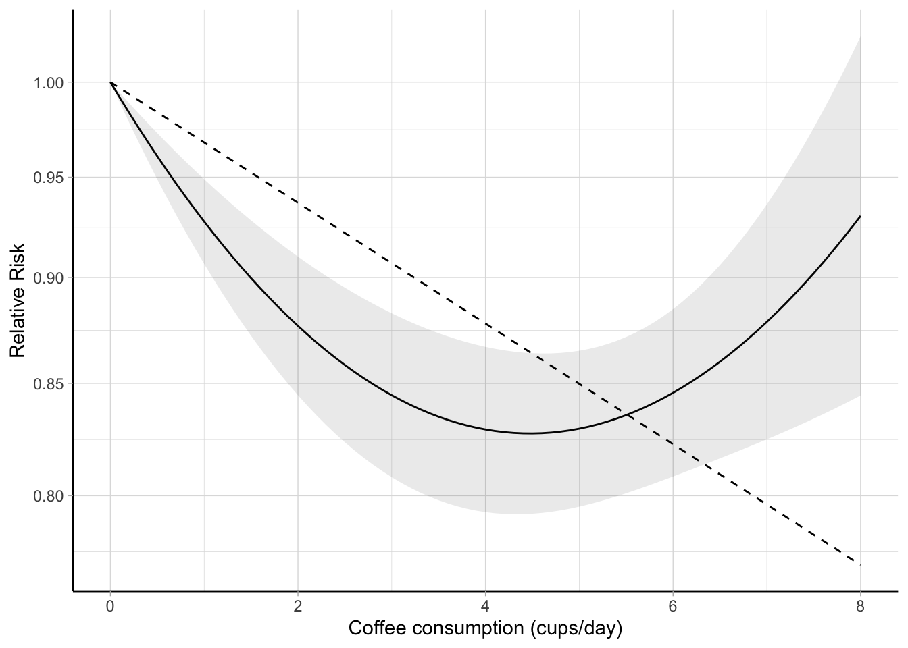
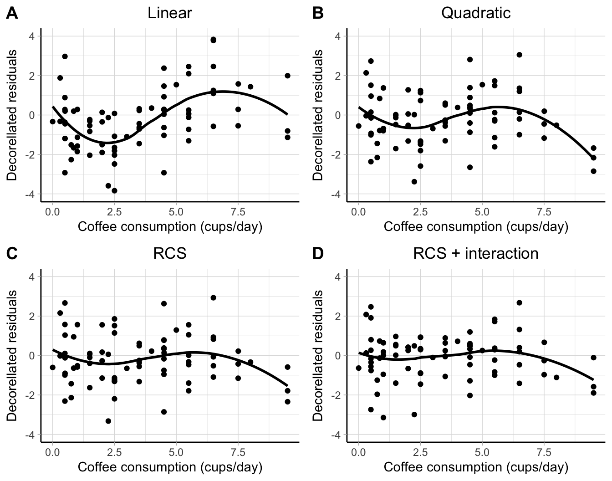
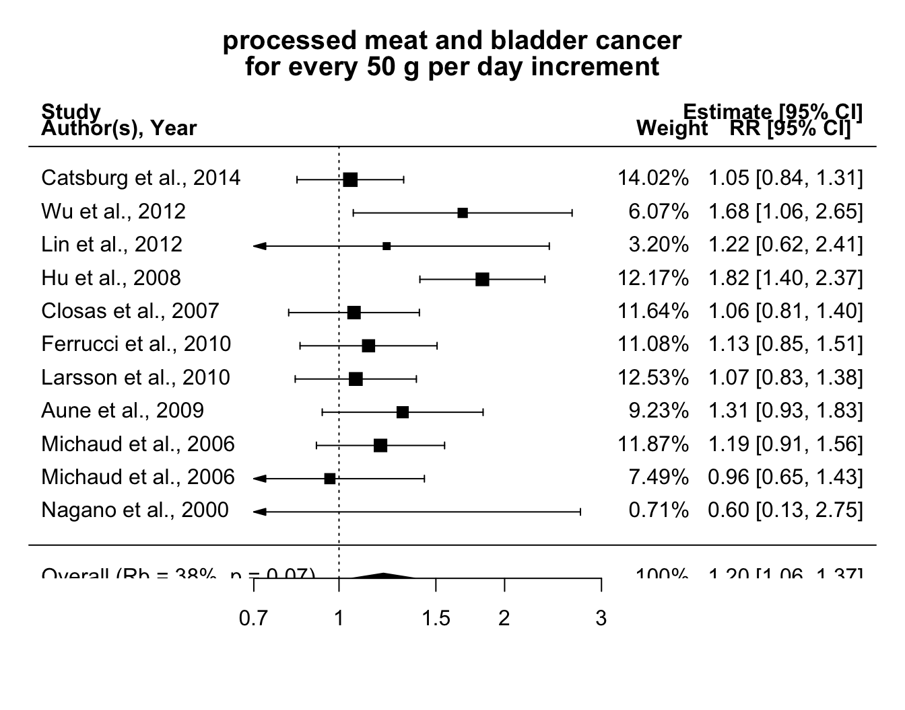
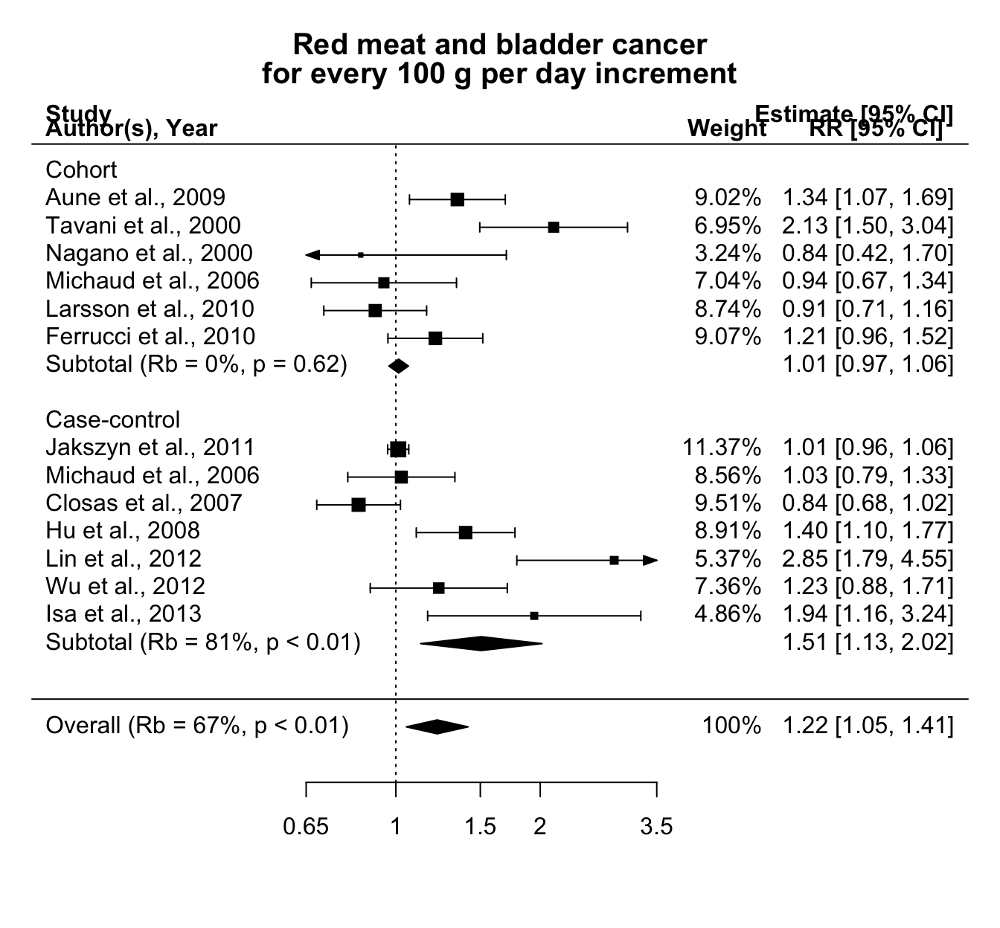
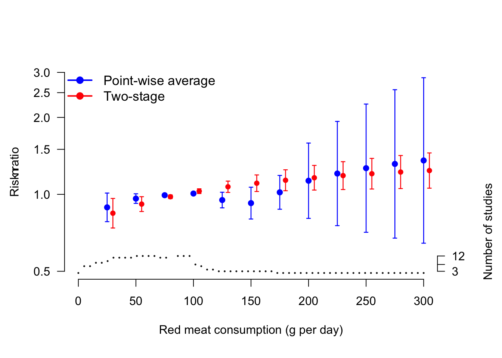
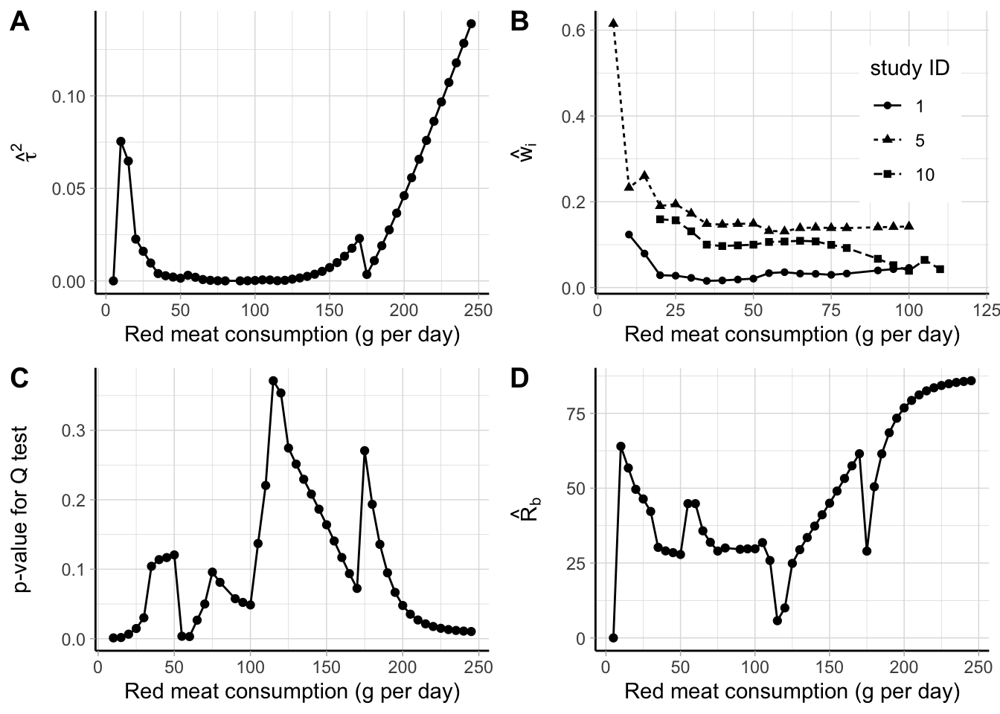
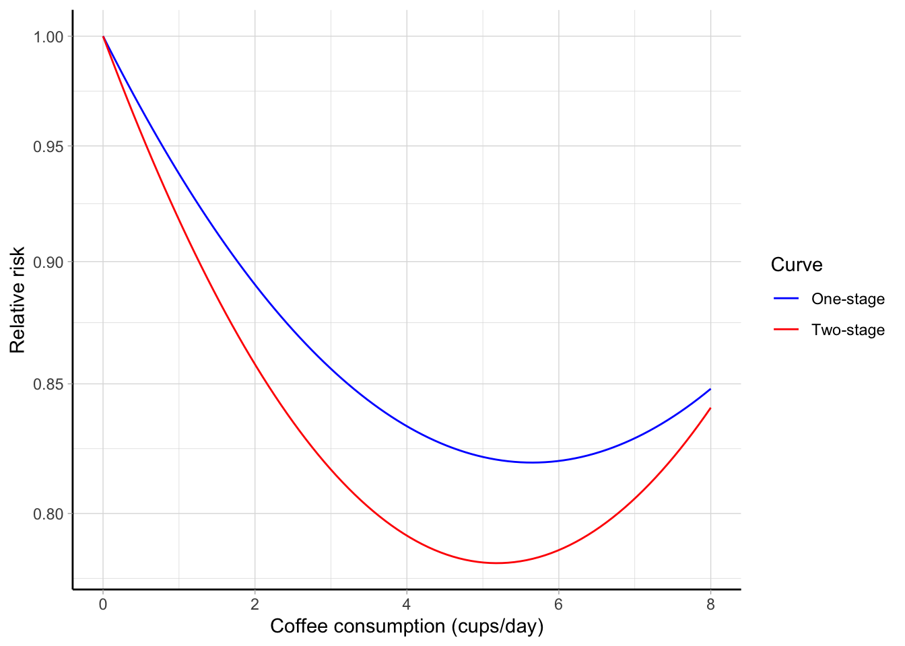
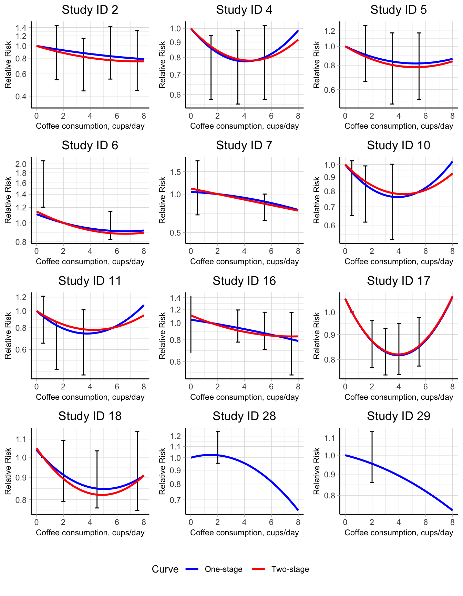

Chapter 5 Results
We illustrated the usage of the developed methodologies and measures by reanalyzing data from published dose–response meta-analyses.
5.1 Paper I
We demonstrated the main aspects of the methodology reanalyzing aggregated dose–response data from 21 prospective studies on the association between coffee consumption (cups/day) and all-cause mortality (Crippa et al., 2014). The data set coffee_mort is included in the package, with the first six lines printed below.
R> library(dosresmeta)
R> data("coffee_mort")
R> head(coffee_mort) id author year type dose cases n logrr se gender area
1 1 LeGrady et al. 1987 ci 0.5 57 249 0.0000000 0.0000000 M USA
2 1 LeGrady et al. 1987 ci 2.5 136 655 -0.2876821 0.1391187 M USA
3 1 LeGrady et al. 1987 ci 4.5 144 619 -0.1743534 0.1373198 M USA
4 1 LeGrady et al. 1987 ci 6.5 115 387 0.0861777 0.1401409 M USA
5 2 Rosengren et al. 1991 ci 0.0 17 192 0.0000000 0.0000000 M Europe
6 2 Rosengren et al. 1991 ci 1.5 88 1121 -0.1203576 0.2531537 M Europe5.1.1 Single study analysis
We showed how to estimate the dose–response association in a single study. For that purpose, we selected the first study ID 1 consisting of 3 non-referent log relative risks (Legrady et al., 1987). One relevant feature of aggregated dose–response data is the correlation arising from having a common comparator. The covar.logrr function can be used to reconstruct the covariance matrix accordingly to the method by Greenland & Longnecker (1992).
R> legrady <- subset(coffee_mort, id == 1)
R> covar.logrr(cases = cases, n = n, y = logrr, v = se^2, type = type,
+ data = legrady) [,1] [,2] [,3]
[1,] 0.01935402 0.01279718 0.01259433
[2,] 0.01279718 0.01885673 0.01254856
[3,] 0.01259433 0.01254856 0.01963947The alternative method by Hamling et al. (2008) can be used by specifying covariance = "h" in the covar.logrr function. The reconstructed covariance matrix is used to efficiently estimate the dose–response association. For example, a linear trend \(y_{1j} = \beta_1 (x_{1j} - x_{10}) + \varepsilon_{1j}\) can be estimated with
R> lin_le <- dosresmeta(logrr ~ dose, se = se, type = type, cases = cases, n = n,
+ data = legrady)
R> lin_leCall: dosresmeta(formula = logrr ~ dose, type = type, cases = cases,
n = n, data = legrady, se = se)
Fixed-effects coefficients:
dose
0.0328
1 study 3 values, 1 fixed and 0 random-effects parameters
logLik AIC BIC
-0.7914 3.5827 2.6813 The change in the log relative risk of all-cause mortality associated with a 1 cup/day increase in coffee consumption was 0.033. That is, the increment of 1 cup/day of coffee was associated with a 3.4% (\(\exp(0.033) = 0.033\)) higher mortality risk.
The predict method facilitates the computation for the predicted linear increase for any arbitrary amount of coffee consumption. For example, setting delta = 3
R> predict(lin_le, delta = 3, expo = TRUE) delta pred ci.lb ci.ub
3 1.103507 0.9744976 1.249596In the study by Legrady et al. (1987), 3 cups/day increase in coffee consumption was associate with a 10% (95% CI 0.97, 1.25) higher mortality risk.
Alternative curves can be specified in the formula argument. For example, a quadratic trend \(y_{1j} = \beta_1 (x_{1j} - x_{10}) + \beta_2 (x_{1j}^2 - x_{10}^2) + \varepsilon_{1j}\) can be estimated.
R> quadr_le <- dosresmeta(logrr ~ dose + I(dose^2), se = se, type = type,
+ cases = cases, n = n, data = legrady)
R> quadr_leCall: dosresmeta(formula = logrr ~ dose + I(dose^2), type = type, cases = cases,
n = n, data = legrady, se = se)
Fixed-effects coefficients:
dose I(dose^2)
-0.2135 0.0334
1 study 3 values, 2 fixed and 0 random-effects parameters
logLik AIC BIC
3.5738 -3.1475 -4.9503 The coefficients of the quadratic model are not directly interpretable. The results can be instead presented in terms of predicted relative risks for selected values of coffee consumption.
R> predict(quadr_le, newdata = data.frame(dose = 0:6), expo = TRUE) dose I(dose^2) pred ci.lb ci.ub
1 0 0 1.0000000 1.0000000 1.0000000
2 1 1 0.8352219 0.7209175 0.9676497
3 2 4 0.7458585 0.5796705 0.9596916
4 3 9 0.7121374 0.5191844 0.9768005
5 4 16 0.7269823 0.5166453 1.0229519
6 5 25 0.7934812 0.5680037 1.1084654
7 6 36 0.9259812 0.6805480 1.2599276The quadratic model suggested a U-shaped inverse association, with the maximum risk reduction, 29% (95% CI 0.52, 0.98), observed for 3 cups/day of coffee compared.
5.1.2 Multiple studies
The chosen curves can be estimated also for the other studies. One possibility is to use the tidyverse package (Wickham, 2017) in order to obtain the linear trends and corresponding variances.
R> library(tidyverse)
R> lin_i <- coffee_mort %>%
+ split(.$id) %>%
+ map(~ dosresmeta(logrr ~ dose, se = se, type = type,
+ cases = cases, n = n, data = .x))
R> lin_bi <- map_dbl(lin_i, ~ coef(.x))
R> lin_vi <- map_dbl(lin_i, ~ vcov(.x))
R> head(cbind(bi = lin_bi, vi = lin_vi)) bi vi
1 0.03283124 4.470869e-04
2 -0.02360445 3.561441e-04
3 -0.01430817 5.833618e-05
4 -0.04777017 6.194806e-04
5 -0.04736154 1.219069e-03
6 -0.02027627 1.127937e-04The mean linear trend can be calculated with standard packages for meta-analysis such as the mvmeta package (Gasparrini et al., 2012).
R> mvmeta(lin_bi, lin_vi)Call: mvmeta(formula = lin_bi ~ 1, S = lin_vi)
Fixed-effects coefficients:
(Intercept)
-0.0326
22 studies, 22 observations, 1 fixed and 1 random-effects parameters
logLik AIC BIC
36.0221 -68.0442 -65.9551 Alternatively, the two steps of a two-stage analysis (dose–response and pooling) are unified and simplified in the dosresmeta function. In a single call, the study-specific linear trends are estimated and combined with the results being stored in the lin object.
R> lin <- dosresmeta(logrr ~ dose, id = id, se = se, type = type,
+ cases = cases, n = n, data = coffee_mort)The summary method displays the measures and tests of interest.
R> summary(lin)Call: dosresmeta(formula = logrr ~ dose, id = id, type = type, cases = cases,
n = n, data = coffee_mort, se = se)
Two-stage random-effects meta-analysis
Estimation method: REML
Covariance approximation: Greenland & Longnecker
Chi2 model: X2 = 41.8249 (df = 1), p-value = 0.0000
Fixed-effects coefficients
Estimate Std. Error z Pr(>|z|) 95%ci.lb 95%ci.ub
(Intercept) -0.0326 0.0050 -6.4672 0.0000 -0.0424 -0.0227
Between-study random-effects (co)variance components
Std. Dev
0.0172
Univariate Cochran Q-test for residual heterogeneity:
Q = 77.0088 (df = 21), p-value = 0.0000
I-square statistic = 72.7%
22 studies, 22 values, 1 fixed and 1 random-effects parameters
logLik AIC BIC
37.5676 -71.1352 -69.0462 There was an inverse association between increasing levels of coffee consumption and all-cause mortality risk, with a mean relative risk of \(\exp(-0.03) = 0.97\) for a 1 cup/day increase. Similarly to the single study analysis, the predict function returns the combined result for any amount of coffee consumption.
R> predict(lin, delta = 3, expo = T) delta pred ci.lb ci.ub
3 0.9069399 0.8804854 0.9341891The linear trend appeared to be heterogeneous as indicated by both the \(Q\) test (\(Q\) = 77, \(p\) value < 0.01) and \(I^2 = 73\)%. A possible alternative for both reducing the observed heterogeneity and relaxing the linearity assumption is to model the dose–response as a quadratic curve.
R> quadr <- dosresmeta(logrr ~ dose + I(dose^2), id = id, se = se, type = type,
+ cases = cases, n = n, data = coffee_mort)
R> summary(quadr)Call: dosresmeta(formula = logrr ~ dose + I(dose^2), id = id, type = type,
cases = cases, n = n, data = coffee_mort, se = se)
Two-stage random-effects meta-analysis
Estimation method: REML
Covariance approximation: Greenland & Longnecker
Chi2 model: X2 = 75.9674 (df = 2), p-value = 0.0000
Fixed-effects coefficients
Estimate Std. Error z Pr(>|z|) 95%ci.lb 95%ci.ub
dose -0.0847 0.0138 -6.1315 0.0000 -0.1118 -0.0576
I(dose^2) 0.0095 0.0023 4.1751 0.0000 0.0050 0.0139
Between-study random-effects (co)variance components
Std. Dev Corr
dose 0.0491 dose
I(dose^2) 0.0081 -0.9811
Univariate Cochran Q-test for residual heterogeneity:
Q = 113.4826 (df = 42), p-value = 0.0000
I-square statistic = 63.0%
22 studies, 44 values, 2 fixed and 3 random-effects parameters
logLik AIC BIC
99.3250 -188.6501 -179.9617 The overall test \(H_0: \beta_1 = \beta_2 = 0\) (Chi2 model) indicated that the mortality risk significantly varied according to coffee consumption levels (\(\chi_2^2\) = 76, \(p\) value < 0.001). The quadratic model reduces to the simpler linear trend analysis when \(\beta_2 = 0\). Thus, the univariate test for \(\beta_2\) (\(z\) = 4.18, \(p\) value < 0.001) suggested that the all-cause mortality risk was related in a non-linear fashion with coffee consumption. The heterogeneity in the study-specific regression coefficients was reduced but its impact was still important, with the multivariate \(I^2\) = 63%.
The predicted log relative risks from the linear and quadratic analyses can be presented in a graphical format using \(x_\mathrm{ref} = 0\) cups/day as referent (Figure 5.1).
R> xref <- 0
R> pred <- data.frame(dose = c(xref, seq(0, 8, .1))) %>%
+ predict(quadr, newdata = ., expo = T) %>%
+ cbind(lin = predict(lin, newdata = ., expo = T))
R> ggplot(pred, aes(dose, pred, ymin = ci.lb, ymax = ci.ub)) +
+ geom_line() + geom_ribbon(alpha = .1) +
+ geom_line(aes(y = lin.pred), linetype = "dashed") +
+ scale_y_continuous(trans = "log", breaks = scales::pretty_breaks()) +
+ labs(x = "Coffee consumption (cups/day)", y = "Relative Risk")
Figure 5.1: Combined dose–response association between coffee consumption and all-cause mortality (solid line) with 95% confidence intervals (shaded area). Coffee consumption was modelled with a quadratic curve in a two-stage random-effects meta-analysis. The dashed line represents the combined linear trend. The value 0 cups/day served as referent. The relative risks are plotted on the log scale.
Alternatively, the predicted relative risks for desired exposure values, say from 0 to 5 cups/day can be presented in a table.
R> filter(pred, dose %in% 0:5) %>%
+ select(-`I(dose^2)`, -lin.dose) %>%
+ unique() %>% round(3) dose pred ci.lb ci.ub lin.pred lin.ci.lb lin.ci.ub
1 0 1.000 1.000 1.000 1.000 1.000 1.000
12 1 0.928 0.907 0.949 0.968 0.958 0.978
22 2 0.877 0.845 0.910 0.937 0.919 0.956
32 3 0.845 0.808 0.883 0.907 0.880 0.934
42 4 0.829 0.793 0.867 0.878 0.844 0.913
52 5 0.829 0.795 0.865 0.850 0.809 0.893The previous predictions can be easily re-expressed using a different exposure value as referent, e.g. 1.5 cup/day, by changing xref <- 1.5 and rerunning the previous code to produce a new figure or table.
The study-specific dose–response coefficients and related covariance matrices are stored in the results and can be easily accessed. For example, the \(\boldsymbol{\hat \beta}_i\) and \(\widehat{\textrm{Var}} \left( \boldsymbol{\hat \beta}_i \right)\) for the quadratic model in the first two studies are
R> quadr$bi[1:2, ] dose I(dose^2)
1 -0.213506072 0.033448197
2 -0.008546787 -0.001605319R> quadr$Si[1:2][[1]]
[,1] [,2]
[1,] 0.0073978648 -0.0009437912
[2,] -0.0009437912 0.0001281500
[[2]]
[,1] [,2]
[1,] 0.0043603384 -4.268928e-04
[2,] -0.0004268928 4.551165e-05and can be used to plot the individual curves in Figure B.1.
R> newd <- data.frame(dose = c(xref, seq(0, 6, .1)))
R> p_indiv <- cbind(newd, map(array_branch(quadr$bi, 1),
+ ~ exp(.x[1]*newd$dose + .x[2]*newd$dose^2))) %>%
+ gather(study, pred, -dose) %>%
+ ggplot(aes(dose, pred, group = study)) + geom_line() +
+ scale_y_continuous("Relative Risk", trans = "log", breaks = c(.5, 1, 2, 5, 10),
+ limits = c(.25, 10)) + labs(x = "Coffee consumption (cups/day)")The previous analyses suggested that coffee consumption may be inversely associated with all-cause mortality in a non-linear fashion. The highest risk reduction, 17% (95% CI 0.79, 0.87), was observed for 4 cups/day of coffee consumption.
5.2 Paper II
We used the tools presented in Section @ref{sec:gof} to evaluate the goodness-of-fit of the previous analyses. The gof function returns a display of the quantities of interest, namely the deviance test and the adjusted and unadjusted \(R^2\).
We started with the simpler linear trend estimated in a fixed-effect analysis.
R> gof(lin, fixed = TRUE)Goodness-of-fit statistics:
Deviance test:
D = 225.244 (df = 78), p-value = 0.000
Coefficient of determination R-squared: 0.488
Adjusted R-squared: 0.482The fit for the model assuming a linear relationship was poor (Analysis A in Table 5.1). In particular, the deviance test rejected the null hypothesis that the model was properly specified (\(D\) = 225.2, \(p\) value < 0.001) while the percentage of the accounted variation by the analysis was 49%. In addition, the decorrelated residuals vs exposure plot in panel A of Figure 5.2 indicated a specific pattern with negative residuals for low values of the exposure (before 5 cups/day) and positive ones for high levels of coffee consumption.
A possible solution for addressing the lack of fit of the previous analysis is to consider a non-linear example such as a quadratic curve (Analysis B). The fit slightly improved as indicated by which increased to 65% ( = 0.64). The deviance test, however, still showed evidence of lack of fit (\(D\) = 155.1, \(p\) value < 0.001). Furthermore, even if the variability of the residuals reduced (panel B of Figure @ref(fig:gof_pic)), the LOWESS smoother showed a tendency for the residuals to be more likely negative for low and very high exposure values.

Figure 5.2: Decorrelated residuals versus exposure plots with LOWESS smother for different modelling strategies in a dose–response meta-analysis between coffee consumption and all-cause mortality (Crippa et al., 2014).
An alternative strategy (Analysis C) was to model coffee consumption using RCS with 3 knots located at the fixed quantiles 0.10, 0.5, and 0.9 corresponding to 0, 2, 6.5 cups/day. Since the number of parameters is the same as in the Analysis B (\(p\) = 2), the can be used to compare the fit of the two strategies. In particular, the RCS analysis had a better fit, as indicated by the higher = 0.68 ( = 0.67). The pattern in the residuals also leveled off around zero with the exception for the 3 highest dose levels. The deviance test, however, rejected again the null hypothesis for model specification, possibly because of the heterogeneity in the individual curves.
Coffee consumption varies substantially across countries both in terms of coffee powder, methods of preparation, and amount of cup size. In addition, the effect of coffee on all-cause mortality may have a different impact depending on the sex of participants. To address this variability, we employed meta-regression models to explain differences across the studies (Analysis D). We included two study-level covariates indicating the geographical area where the study was conducted (Europa, USA, and Japan) and the sex of the participants (only men, only women, and both sexes). Both the decorrelated vs exposure plot and = 0.74 indicated an improvement in the overall fit of the analysis even if the \(p\) value for the deviance test was below the nominal value (\(D\) = 100.4, \(p\) value = 0.008).
| Analysis | Model | Deviance | df | \(p\) value | ||
|---|---|---|---|---|---|---|
| A | Linear | 225.244 | 78 | 0.000 | 0.488 | 0.482 |
| B | Quadratic | 155.093 | 77 | 0.000 | 0.648 | 0.638 |
| C | RCS | 141.332 | 77 | 0.000 | 0.679 | 0.671 |
| D | RCS + interaction | 100.372 | 69 | 0.008 | 0.772 | 0.739 |
| a 3 knots located at the 10th, 50th, and 90th percentiles of the distribution of coffee. | ||||||
| b As in c) + interaction with gender of participants (only men, only women, both sexes) and geographical area (Europe, USA, Japan) included as categorical study-level covariates. |
5.3 Paper III
We illustrated how to employ the new measure of heterogeneity, \(\hat R_b\), reanalyzing aggregated dose–response data on the association between meat and bladder cancer (Crippa, Larsson, et al., 2016). Five cohort and 8 case-control studies reported results for either red or processed meat and bladder cancer risk including a total of 10,271 cases and 1,066,027 participants. The data for both the associations are also included in the dosresmeta package.
5.3.1 Processed meat and bladder cancer
We started by considering a linear trend analysis for the association between processed meat and bladder cancer risk. The effect sizes for the meta-analysis in the second part of a two-stage dose–response meta-analysis were the linear trends for a 50 g per day increase in processed meat consumption (Figure 5.3). The combined relative risk was 1.2 (95% CI 1.06, 1.37). The \(Q\) test detected statistical heterogeneity (\(Q\) = 17.2, \(p\) value = 0.07). The \(\hat R_b\) = 38% (95% CI 37, 40) indicated that the contribution of heterogeneity in the pooled analysis was limited (Table 5.3), as also suggested by the alternative measures \(I^2\) = 42% (95% CI 40, 43) and \(R_I\) = 43% (95% CI 41, 44). Because the within-study variances were substantially homogenous, the differences between the alternative measures were negligible.
No evidence of non-linearity was observed using either a quadratic curve (\(p\) value = 0.96) or a RCS model with 3 knots located at fixed percentiles (\(p\) value = 0.92).

Figure 5.3: Relative risks of bladder cancer for every 50 g increase per day in processed meat consumption.
5.3.2 Red meat and bladder cancer
An analogous analysis was conducted for the association between red meat consumption and bladder cancer risk, with the estimated linear trends expressed for a 100 g per day increase (Crippa, Larsson, et al., 2016). The pooled relative risk was 1.22 (95% CI 1.05, 1.41). The study-specific associations in Figure 5.4, however, appeared to be heterogeneous (\(Q\) = 60, \(p\) value < 0.01). In particular, the contribution of the heterogeneity in determining the variance of the combined effect was \(\hat R_b\) = 67%, indicating a moderate impact. Given that the distribution of within-error terms was higher as compared to the previous analysis (Figure B.2), the differences with the alternative measures were higher: \(I^2\) = 80% (95% CI 79, 81) and \(R_I\) = 89% (95% CI 88, 89), which suggested a larger heterogeneity across the study specific trends.
Similarly to the case of processed meat, no evidence of non-linearity was found (\(p\) value equal to 0.73 and 0.74 for \(\beta_2\) in the quadratic and RCS model.)

Figure 5.4: Relative risks of bladder cancer for every 100 g increase per day in red meat consumption, separately for cohort and case-control studies.
The variability across the linear trends could be related to differences in the study design. Figure 5.4 reports also the results separately for cohort and case-control studies. No association was observed in the subset of the prospective studies (combined RR = 1.01 (95% CI 0.97, 1.06)). The individual associations were homogenous (\(Q\) = , \(p\) value = ), with \(\hat R_b\) = 0%. The results for case-control studies, instead, largely varied across studies \(Q\) = 39.8, \(p\) value < 0.01 and \(\hat R_b\) = 81%. A summary of the results for the alternative measures of heterogeneity in the different analyses is presented in Table 5.3.
| Analysis | \(\hat \beta\) (95% CI) | \(Q\) test, \(p\) values | \(CV_{v_i}\) | \(\hat R_b\) (95% CI) | \(I^2\) (95% CI) | \(\hat R_I\) (95% CI) |
|---|---|---|---|---|---|---|
| Processed meat | 1.2 (1.06, 1.37) | 17, 0.07 | 0.33 | 38 (37, 40) | 42 (40, 43) | 43 (41, 44) |
| Red meat | 1.22 (1.05, 1.41) | 60, < 0.01 | 5.94 | 67 (66, 68) | 80 (79, 81) | 89 (88, 89) |
| Red meat, Prospective | 1.01 (0.97, 1.06) | 4, 0.6 | 3.51 | 0 (0, 4) | 0 (0, 8) | 0 (0, 100) |
| Red meat, Case-control | 1.51 (1.13, 2.02) | 40, < 0.01 | 0.36 | 81 (80, 82) | 85 (84, 86) | 86 (85, 86) |
5.4 Paper IV
The proposed and alternative measures of between-studies variability cannot capture the heterogeneity related to differences in the exposure range distribution. We presented the implementation of a point-wise strategy as a possible remedy, reanalyzing the data between red meat consumption and bladder cancer risk described in the previous section. The data consists of 13 independent studies where the exposure varied across studies not only in terms of definition and measurement but also in terms of range of assessment. For example, the minimum red meat consumption in one study (85.5 g per day in study ID 7) was higher then the maximum exposure value in other studies (71.7 g per day in study ID 3). Furthermore, only 3 out 13 studies reported relative risks for meat consumption greater than 150 grams/day. Descriptive measures of red meat consumption across studies are reported in Table @ref(tab-chr_redtab) and graphically presented in Figure B.3.
We decided to model the association using FP2. To allow for differential dose–response relationships, we fitted the FP2 models for different combination of power terms separately in each studies and selected the study-specific best fitting polynomials as the model with the lowest AIC. As expected, the best study-specific power terms varied across studies (Table C.2), with the most common polynomial defined by \(p = (-2, -2)\) (8 out of 13 studies). Interestingly, the corresponding analysis using the AIC from the a one-stage model selected \(p = (-1, -0.5)\) as the best FP2, a combination of power terms that was not preferred in any of the individual dose–response analyses. Figure 5.5 displays the predicted curves based on the best FP2 for each study, limited to the observed exposure range (blue solid lines). Extrapolation are represented by dashed lines while the red curves represent the predicted association from the one-stage model, which imposed the common power terms \(p = (-1, -0.5)\) across the studies. While the alternative strategies gave similar results in the observed exposure range, larger differences were observed for high levels of red meat consumption. Taking study ID 5 as an example, the predicted relative risks for 150 g compared to 15 g of red meat consumption per day were 2.14 (95 CI 0.81, 5.67) and 1.13 (95% CI 0.84, 1.53) for the FP2 with the study specific \(p_5 = (3, 3)\) and the common power terms \(p = (-1, -0.5)\), respectively.
![Study-specific dose--response curve between red meat consumption and bladder cancer risk. Blue and red solid lines are the predicted relative risks based, respectively, on the best fitting fractional polynomial (FP2) and on a common FP2 with p = (-1, -.5) limited to the observed exposure range. Dashed lines indicate extrapolated predicted relative risks. Confidence intervals for best fitting FP2 are represented by shaded areas (lighter colors correspond to extrapolations). All predicted relative risks are presented on the log scale using the study-specific reference values as comparators.](thesis_files/figure-html/pbi-plot-red-1.png)
Figure 5.5: Study-specific dose–response curve between red meat consumption and bladder cancer risk. Blue and red solid lines are the predicted relative risks based, respectively, on the best fitting fractional polynomial (FP2) and on a common FP2 with p = (-1, -.5) limited to the observed exposure range. Dashed lines indicate extrapolated predicted relative risks. Confidence intervals for best fitting FP2 are represented by shaded areas (lighter colors correspond to extrapolations). All predicted relative risks are presented on the log scale using the study-specific reference values as comparators.
In a point-wise dose–response meta-analysis, we chose to predict the study specific log relative risks for a fine grid of exposure values ranging from 5 g to 300 g with step by 5 g, using 85 g/day (median reference dose value) as referent. The study-specific predictions were limited to the observed exposure range so that study ID 3, for example, predicted log RRs for dose values up to 70 g/days. Thus, the number of study-specific predicted log RRs varies across the selected red meat consumption levels.

Figure 5.6: Comparison between pointwise and one-stage predicted relative risks for the association between red meat consumption (g per day) and bladder cancer risk. The step function at the bottom indicates the number of studies contributing to the prediction in the pointwise analysis. The relative risks are presented on the log scale using 85 g per day as referent.
The combined results from the 59 meta-analyses can be presented pointwisely. Figure 5.6 plots the combined predicted relative risk from a point-wise strategy and compares them with the corresponding one-stage analysis. In the reanalyzed data, the two strategies provided similar point estimates. However, the confidence intervals from the point-wise analysis were larger as compared to the corresponding one-stage model, reflecting the higher uncertainty in the predictions. For example, for 100 g the predicted RRs were 0.92 (95% CI 0.80, 1.07) for the point-wise strategy and 1.11 (95% CI 1.03, 1.19) for the one-stage model. Similarly, for 250 g the two predictions were 1.27 (95% CI 0.71, 2.26) and 1.20 (95% CI 1.05, 1.38).

Figure 5.7: Point-wise results for a meta-analysis between red meat consumption (g per day) and bladder cancer risk: estimates of \(\hat \tau^2\) (A), random-effects weights for three studies (B), \(p\) value for ther \(Q\) test (C), and \(\hat R_b\) (D).
One advantage of a point-wise strategy is that additional statistics from the meta-analytic models can be presented pointwisely (Figure 5.7). For example, the estimates for the between-study heterogeneity, \(\hat \tau^2\), were lower than 0.02 for red meat consumption between 20 g and 150 g per day, and rapidly increased for higher values (panel A). The weights of the individual studies changed over the range of the exposure values. Panel B displays the standardized weights for three of the included studies. The percentage weight for study ID 5 was very large for red meat consumption lower than 30 g, while it stabilized around 15% after that. For study ID 10, the weight declined from 20% to 5% as the dose value increased, while it remained constant around 3% for study ID 1. The results from the \(Q\) test in panel C indicated presence of statistical heterogeneity for red meat consumption betwee 100 and 200 g. The impact of heterogeneity quantified by the \(\hat R_b\) varied between 25% and 60% for exposure values below 75 g per day, while it reached 85% for higher dose levels.
5.5 Paper V
A common limitation of a two-stage and point-wise approach is that the dose–response analyses are limited by the low number of data points in each study, usually \(J_i \le 3\). We demonstrated an alternative one-stage model for dose–response meta-analysis using a subset of the data on coffee consumption and all-cause mortality presented in Sections 5.1 and 5.2. The data consists of the results for 12 independent populations including 5508 cases and 750959 participants (Crippa et al., 2014). The results for two cohorts (Nilsson et al., 2012) were excluded in the initial analysis of a non-linear trend because they only reported 1 non-referent risk. We performed a one-stage random-effects meta-analysis assuming a quadratic relationship on the whole data set and compared the results with the corresponding two-stage analysis which excluded the results by Nilsson et al. (2012).
Although both the analyses suggested a U-shaped association between increasing levels of coffee consumption and mortality risk, the predicted curve from a two-stage model provided lower relative risk estimates (Figure 5.8). Using 0 cups/day, the predicted RRs for 2 cups/day were 0.86 (95% CI 0.81, 0.91) for the two-stage analysis, and 0.89 (95% CI 0.83, 0.96) for the one-stage model. Similarly, for 5 cups/day the corresponding numbers were 0.78 (95% CI 0.72, 0.84) and 0.82 (95% CI 0.76, 0.89). Interestingly, the standard errors for the beta coefficients were lower in the two-stage analysis \(\left( \textrm{SE} \left(\hat \beta_1 \right) = 0.021, \textrm{SE} \left(\hat \beta_2 \right) = 0.003 \right)\), even if the corresponding estimates from the one-stage analysis were based on a larger number of data points \(\left( \textrm{SE} \left(\hat \beta_1 \right) = 0.027, \textrm{SE} \left(\hat \beta_2 \right) = 0.004\right)\). As a consequence, the confidence intervals for the reported predicted relative risks were larger in the one-stage analysis, while the \(p\) value for non-linearity \(H_0: \beta_2 = 0\) was lower in a two-stage analysis: \(p\) = 0.008 compared to \(p\) = 0.154 from the alternative one-stage model.

Figure 5.8: Combined quadratic association between coffee consumption (cups/day) and all-cause mortality estimated using a one-stage (blue line) and two-stage (red line) approach. The predicted relative risks are plotted on the log scale using 0 cups/day as referent.
The exclusion of 2 studies affected also the estimation of the variance components in \(\boldsymbol{\Psi}\). For example, the variances of the random-effects based on 10 out of the 12 studies (two-stage) were 0.0013 for \(b_1\) and 5^{-5} for \(b_2\), while they were 0.00544 and 1.5^{-4}, respectively, in the alternative model. The \(I^2\) = 45% from the multivariate two-stage analysis indicated a moderate impact of the heterogeneity. The same question can be addressed in a one-stage analysis by looking at the variance partition coefficients for the observed dose values. The VPC plot suggested a limited impact of heterogeneity between 20 and 40% for coffee consumption below 7 cups/day, while it become substantial for higher exposure values (Figure B.5).
Oftentimes it can be informative to provide a graphical presentation not only of the marginal association but also of the study-specific or conditional curves. The multivariate normal distribution for the random-effects is used to predict the study-specific regression coefficients, exploiting the information from the between-studies heterogeneity matrix (Table C.4). It is worthwhile to notice that the non-linear curves in the one-stage approach can be predicted also for those studies providing only one non-referent log RR (study ID 27 and 28), which were instead excluded in the traditional approach. The predicted conditional curves are graphically presented in Figure 5.9.

Figure 5.9: Conditional predicted quadratic curves for the association between coffee consumption and all-cause mortality in a one-stage (blue lines) and two-stage (red lines) approach. The relative risks are presented on the log scale using the study-specific reference categories as comparators.
Different strategies can be chosen to model the dose–response association of interest. A one-stage approach, in particular, gives the opportunity to estimate a complex curve defined by multiple parameters in order to answer more elaborate research questions. A model with a spike at zero treats the low or unexposed participants as a separate group, and estimates the dose–response association only for the exposed groups. For example, we can think of the participants drinking a low amount coffee (less than 1 cup/day) as a separate group. The rest of the association can be described by two lines with a different slope before and after 4 cups/day. The mixed of linear splines model can be specified as \[\begin{align*} \mathbf{y}_i = & (\beta_1 + b_{i1}) \left( \mathbf{I}(\mathbf{x}_{i} < 1) - \mathbf{I}(x_{i0} < 1) \right) +(\beta_2 + b_{i2}) \left( (\mathbf{x}_{i} - 1)\mathbf{I}(\mathbf{x}_{i} \ge 1) - (x_{i0} - 1)\mathbf{I}(x_{i0} \ge 1) \right) + \nonumber +\\ & +(\beta_3 + b_{i3}) \left( (\mathbf{x}_{i} - 4)\mathbf{I}(\mathbf{x}_{i} \ge 4) - (x_{i0} - 4)\mathbf{I}(x_{i0} \ge 4) \right) + \boldsymbol{\epsilon}_{i} \tag{5.1} \end{align*}\]
where the indicator function \(\mathbf{I}\) takes on value 1 if the condition in the parenthesis is met, 0 otherwise. Another possibility consists of considering homogeneous groups of exposure in which the mortality risk can be considered constant. For instance, coffee consumption could be divided in intervals \(< 1\), \([1, 3)\), \([3, 5)\), \([5, 7)\), and \(> 7\) cups/day. The dose–response model is specified by including 4 dummy variables (\(x_1, x_2, x_3\), and \(x_4\)) and using one level (e.g. \([1, 3)\)) as referent \[\begin{multline*} \mathbf{y}_i = (\beta_0 + b_{i0}) + (\beta_1 + b_{i1}) (\mathbf{x_1}_{i} - {x_1}_{i0}) + (\beta_2 + b_{i2}) (\mathbf{x_2}_{i} - {x_2}_{i0}) (\beta_3 + b_{i3}) (\mathbf{x_3}_{i} - {x_3}_{i0}) + \\ + (\beta_4 + b_{i4}) (\mathbf{x_4}_{i} - {x_4}_{i0}) + \boldsymbol{\epsilon}_{i} \end{multline*}\]
The two models are parameterized, respectively, by \(p = 3\) and \(p = 4\) parameters. It is unlikely to have enough data points (at least 4 non referent log RRs) for estimating the previous models in a two-stage analysis. Using a one-stage approach, instead, the predicted curve from those alternative analyses are presented graphically in Figure B.4 together with the quadratic model described before. In the spike at 0 model, the predicted mortality risk for the unexposed participants was 14% higher (95% CI 1.02, 1.28) as compared to participants drinking 1 cup/day. Every one cup per day increase in coffee consumption was associated with 2% (95% CI 0.95, 1.01) reduction in all-risk mortality, whereas the same number was less pronounced (\(\beta_3\) = 0.01) for coffee consumption higher than 4 cups/day, with a decreased risk of 1% (95% CI 0.96, 1.02). The categorical model provided similar results with a 16% (95% CI 1.04, 1.28) higher mortality risk for never drinkers compared to the category \([1, 3)\) of coffee consumption. Categories for coffee consumption greater or equal to 3 cup/day indicated a decreased mortality risk. We can evaluate if this further decline is significant by testing \(H_0: \beta_2 = \beta_3 = \beta_4 = 0\). The multivariate Wald test did not provide enough evidence to reject the null hypothesis (\(\chi_3^2\) = 5.08, \(p\) value = 0.17). The fit of the alternative analyses can be compared by looking at the AIC. We selected the quadratic curve as the best fitting model since it had the lowest AIC (-29), as compared to the spike at 0 (-28) and the categorical model (-11).
After choosing the quadratic curve as the basis for modelling the dose–response association, we might try to relate the heterogeneity observed in the VPC plot to study-level covariates. For example, we can investigate if the sex of the study participants (3 levels: only men, only women, both sexes) substantially alter the combined quadratic association or partially explain the observed heterogeneity. This can be done by fitting a meta-regression model which includes in the fixed-effect matrix the interactions between the quadratic transformations (\(x\) and \(x^2\)) and the two dummy variables (\(u_1\) and \(u_2\)) for the sex of the participants \[\begin{multline*} \mathbf{y}_i = (\beta_1 + b_{i1}) (\mathbf{x}_{i} - {x}_{i0}) + (\beta_2 + b_{i2}) (\mathbf{x}_{i}^2 - {x}_{i0}^2) + \\ + \beta_3 (\mathbf{x}_{i} - {x}_{i0}) \times \mathbf{u_1}_{i} + \beta_4 (\mathbf{x}_{i}^2 - {x}_{i0}^2)\times \mathbf{u_1}_{i} + \\ + \beta_5 (\mathbf{x}_{i} - {x}_{i0}) \times \mathbf{u_2}_{i} + \beta_6 (\mathbf{x}_{i}^2 - {x}_{i0}^2)\times \mathbf{u_2}_{i} + \boldsymbol{\epsilon}_{i} \end{multline*}\]
The meta-regression model simplifies to the quadratic model when the coefficients for the interaction terms are equal to 0. A test for \(H_0: \beta_3 = \beta_4 = \beta_5 = \beta_6 = 0\) is equivalent to test if the dose–response associations differ according to sex of the participants. The multivariate Wald test (\(\chi_3^2\) = 2.41, \(p\) value = 0.66) did not reject the null hypothesis. Furthermore, the meta-regression model was not able to explain the observed residual heterogeneity (Figure B.5).